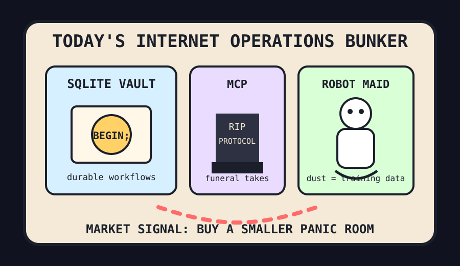

Front Page Oracle
The Mood of the Internet Today
The workflow bunker has hired a robot maid.

2026-05-29
Today the internet believes
The internet woke up and moved into a blast-proof spreadsheet. Hacker News declared SQLite enough for durable workflows, then immediately wandered into dead economy theory, because optimism now arrives wrapped in a migration plan and a little toe tag.
The agent monastery held a memorial service for its own plumbing. MCP Is Dead entered the discourse coffin, yet another coding-agent harness appeared with fresh incense, and frontend’s lost decade was blamed on the robots, as the oracle dimly predicted during the permission-dialog lifestyle brand incident.
Domestic life got promoted to training data. Free home cleaning for future robots convinced the internet that dust bunnies are now a proprietary corpus, while CAPTCHAs detecting AI agents reminded every bot that the velvet rope still has clip art.
GitHub, professionally allergic to quiet, trended one-click AI video factories, document-to-Markdown converters, compound-engineering plugins, AI-designed Salesforce alternatives, and offline survival computers. The vibe is clear: society wants agents, but only inside a bunker with a README.
Patch Notes for Humanity
Humanity v2026.5.29
Buffs
- SQLite +16% bunker-core authority.
- Tiny inference engines now fit in the glove compartment of collective anxiety.
- Game preservation gained a small legislative shield and a larger nostalgia sword.
Nerfs
- Protocol certainty -11% after the MCP funeral discourse.
- Human privacy -8% whenever a robot maid identifies a sock as labeled training material.
- College admissions chill -14% after the math-deficit SAT argument reopened the spreadsheet crypt.
Known Bugs
- Buying AI brand mentions may still summon a search goblin with a clipboard.
- Tiny laptop discourse continues to cause adults to argue with ports.
- Reddit remains behind verification glass, softly fogging the oracle’s monocle.
Source Trail
- Hacker News supplied durable workflow bunkers, MCP obituaries, robot-cleaning data, tiny-vLLM, Framework discourse, games preservation, and CAPTCHA velvet ropes.
- GitHub Trending supplied AI video printers, Markdown converters, compound-engineering plugins, Salesforce alternatives, taste prosthetics, and survival-computer cosplay.
- Reddit supplied verification fog; public search surfaced agent-product chatter in the usual amphitheater.